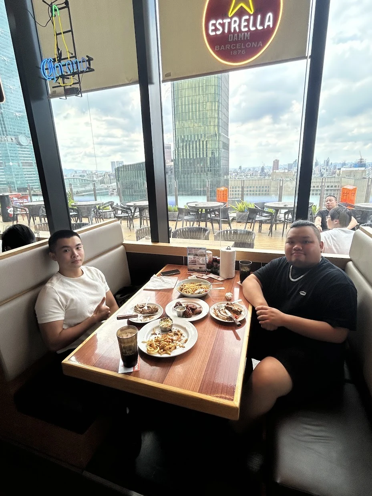

先說清楚，你想做什麼。
從你的工作或創作需求開始，練習交代背景、目標與限制，把模糊的想法變成能執行的指令。
釐清需求 · 拆解任務 · 寫出 Prompt
QIU ZHI WEI / AI EDUCATOR
AI 課程講師 ／ 商業視覺設計背景
把 Prompt、Skill 與生成式 AI，變成能跟著完成的實作。從圖片、簡報與工作週報，到小遊戲和個人網站，陪你練習做出自己的版本。

01 / WHAT YOU CAN LEARN
LEARN BY MAKING我的課程從具體的任務開始。
你可以練習圖片創作、整理工作，
也可以親手做出遊戲與個人網站。
練習交代主體、用途、風格、版型與限制，再透過觀察與修改，接近自己想要的結果。
請幫我規劃一張新品飲料的社群廣告。先詢問目標客群、產品特色與品牌風格，再提出主標、視覺構圖和版面建議。
02 / HOW I TEACH
先理解，再操作，最後做出自己的版本。把工具放進具體任務，
讓學習留下能繼續使用的方法。
A SIMPLE BELIEF
從「我不熟悉」，
到「這個，我做出來了」。

03 / MEET YOUR INSTRUCTOR
我是一位從商業視覺設計出發的 AI 課程講師。喜歡把複雜的操作拆成步驟，也把每一步為什麼這樣做說清楚。
我關心的是，你能不能把 AI 用在自己的事情上。課堂裡會從需求描述、工具操作到成果修改，陪你理解做法，再練習換成自己的內容。
商業視覺、影像處理與品牌內容是我的實務背景；Prompt、Skill 與生成式 AI，則是我持續整理成教材與實作練習的方法。希望你帶走的，是回到工作裡也能繼續使用的能力。
04 / EXPERIENCE
把工作累積，帶進教學裡。商品、品牌社群與視覺設計，讓我習慣先理解需求，再整理資訊。這些實作經驗，也成為我在課堂上拆解問題的角度。
以艾自己水餃等商品內容，結合食材、產品影像與季節色彩，製作口味主題、節慶檔期與商品組合廣告。
將商品特色放在畫面焦點，安排口味、優惠與品牌資訊的閱讀順序。
以春蘭系統廚具等內容，將空間氛圍、規劃需求與材質比較整理成易讀的視覺資訊。
涵蓋服務與知識型社群、案例視覺、活動及影片封面，兼顧生活感與實用資訊。
梵希相關設計經驗，包含人物影像、活動主題及資訊密度較高的版面。
透過影像比例、色彩與文字層級，整理社群廣告、活動內容與項目資訊。
恩特汽車包膜相關內容，將包膜、材質與服務差異轉化為清楚的比較資訊。
運用車體影像、對照、圖示與短句，建立服務介紹、比較型社群與活動視覺的閱讀路徑。
金融標誌改版提案與小編小幫手識別，從造型探索到符號、配色與標誌組合。
金融標誌從無限符號概念調整比例與線條；小編小幫手聚焦識別設計，在科技感與親和感之間尋找平衡。
累積電商商品影像、酒類行銷視覺、商品攝影、修圖、Banner、影片剪輯與官網內容維護經驗。
設計延伸至海報、DM、菜單及易拉展，依尺寸、觀看距離與媒介調整版面。